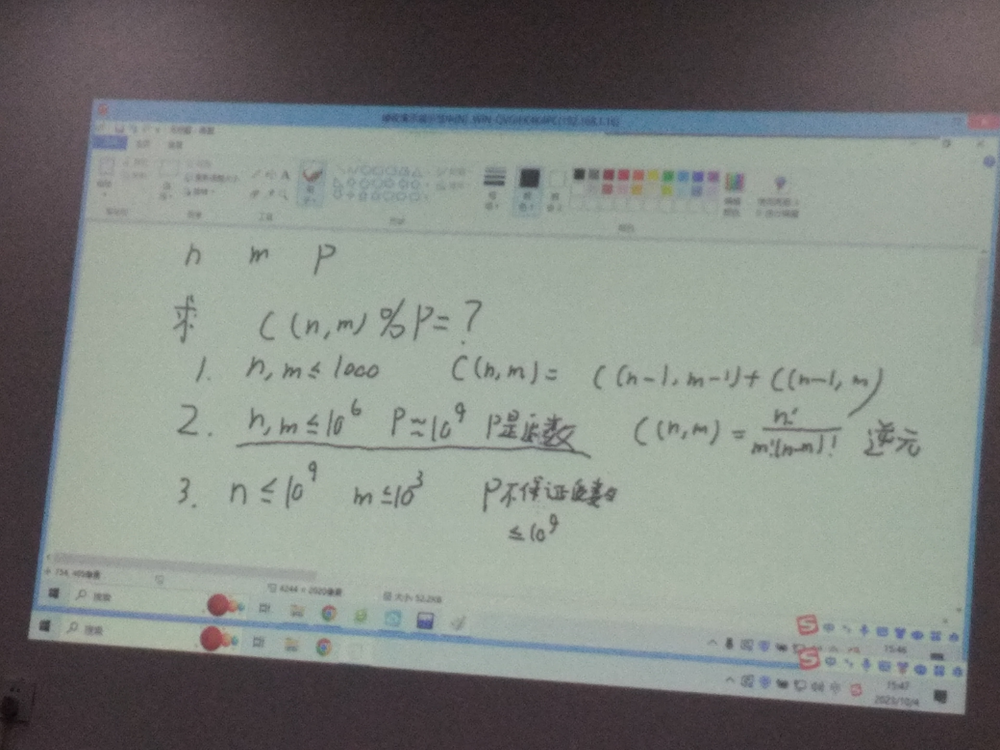

膜拜24班dalao 杨昊臻

膜拜新老师 钟皓曦

课件：n42.pdf
- 简单理解：n行，m列的数组
- 运算
-
加/减
对应位置相加/减即可
-
乘/除
对于A×B=C，其中
- A：n行m列
- B：j行k列
- C：n行k列
必须满足条件
- m=j
- C的行数为A的行数，列数为B的列数
对于C中的第a行第b列的数，取出A矩阵的第a行，B矩阵的第b列，对应位置相乘，然后相加。
举个栗子：
[1324]×[142536]=[91912261533]
C(n,m)=m!n(n−1)(n−2)...(n−m+1)=(n−m)!m!n!C(n,m)=C(n−1,m−1)+C(n−1,m)
接下来与信息学结合一下
- 题目描述：
已知n,m,p，求C(n,m) % P
- 图解：

定义：在模意义下，一个数N，有N÷a=N×aP−2
- 概率：
P(A)=总次数A出现的次数
- 期望：
- 类型：
- 离散型：
E(X)=∑i=1nxi×P(xi)
- 连续型：
E(X)=∫−∞+∞x×f(x)dx
- 性质：
- E(x1+x2)=E(x1)+E(x2)
- E(ax)=aE(x)
- E(x1×x2)=E(x1)×E(x2)
- E(x2)=E(x)2+D(x)
- D(x)=E(x2)−E(x)2
- D(ax)=a2D(x)
- D(x1+x2)=D(x1)+D(x2)
- D是什么？
- D是方差，表示随机变量的离散程度
- D(x)=∑i=1n(xi−E(x))2×P(xi)
- D(x)=∫−∞+∞(x−E(x))2×f(x)dx